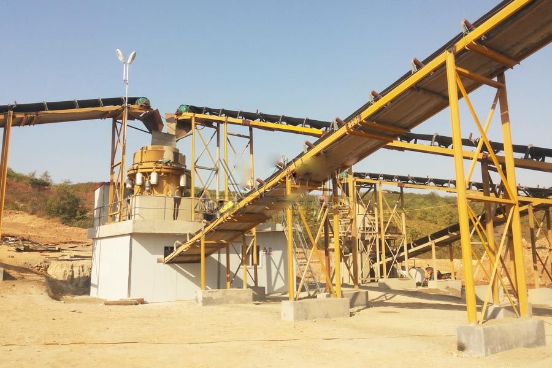

- Home >
- application case >
- Automatic Hydraulic Cone Crusher

Construction waste crushing production line

Mobile construction waste crushing station for urban construction waste crushing.
Automatic Hydraulic Cone Crusher
Henan Zhengzhou py600 cone crushers, Zambian manufacturer of high efficiency hydraulic cone crusher, Zambia price of cone Crusher
Key words: Cone crusher, cone sandblasting machine, Crusher manufacturer
Description: Cone Crusher as a quarry used for crushing hard and important equipment, excellent quality and consistent performance make it the NO1 for mine mechanical crushing equipment. Xingyang in Zhengzhou, Henan province, San Li Zhuang industrial park has a long history of cone Crusher manufacturer CAG mining machinery company, gongyi, Jia Yu, near Zhengzhou, Luoyang, Kaifeng, jiyuan factory is introducing CAG company cone Crusher.

CAG mine of Zhengzhou Henan gongyi machine cone Crusher to stone materials factory
Shanghai CAG mill production of 200 tons of stone production line recently sent to Zambia, the production line by the feeding machine, the Hubei type crushing machine, spring cone crusher, vibrating screen, such as conveyor main equipment composition. In the configuration of the production line, the spring cone crusher is in the digestion and absorption of all kinds of countries with the international advanced level of 80 years on the basis of the research of cone crusher. The structure of it is obviously different from the traditional cone crusher, and has focused on the main advantages of the different types of cone crusher. With the advantages of reliable structure, high production efficiency, easy adjustment, and the use of the economy, it is the best choice for mining machinery!
Cone crusher is suitable for fine crushing and ultra fine crushing of hard rock, ore, slag, refractory materials, etc.. Cone crusher is widely used in metallurgical industry, construction industry, construction industry, chemical industry and phosphate industry for crushing hard and hard ores and rocks.
Cone Crusher ore suppliers Shanghai CAG machine description
CAG Zhengzhou mining machinery limited company is a professional production of single-stage hammer crusher, Jaw Crusher, impact crusher, cone crusher, sand maker, mobile crusher, mill and dressing equipment, high-tech enterprises, in areas such as gravel, sand, milling with in-depth research. Since the company was founded, and in 30 provinces, municipalities and autonomous regions, large, medium and small enterprises to establish strategic cooperative relations, with aggregate production line baishitiao success stories, building waste processing hundreds of success stories, sales and service network in more than 550 domestic cities and regions, covering national economic center and a population of 90%.
Part CAG mine machine cone Crusher introduced below success story
(1) the Huaihua aggregate plant producing 3000 tons of granite, Daxing line CAG ore feeder, Jaw Crusher, cone crusher, vibrating screen
(2) CAG mine machine cone Crusher’s debut, Hangzhou, Zhejiang, pebbles sand production line
(3) in Weifang, Shandong, and Henan Sheng stone factory introduces CAG, Zhengzhou coal mine machine cone Crusher broken basalt
Leave Me A Message, Now
If you have any questions regarding equipment prices, production line configuration or other problems, you can send a message to us, we will contact you soon.